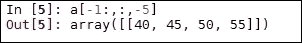
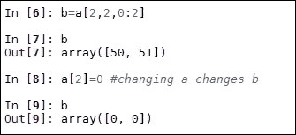
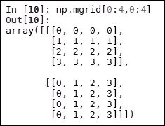
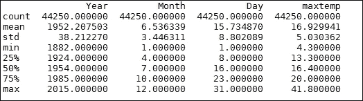
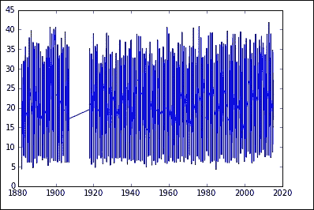
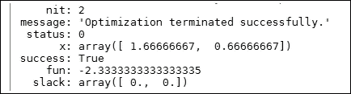
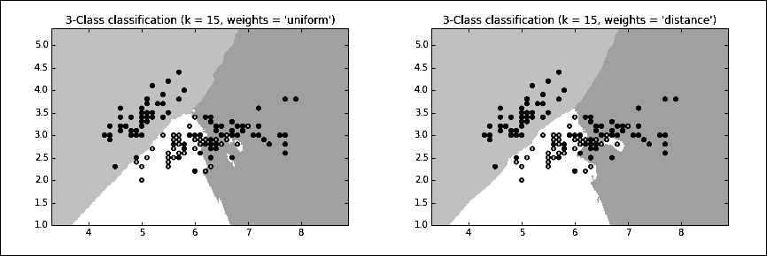

我们应该知道在 Python 中有一个表示数据的类型层次结构。根是不可变的对象，比如整数、浮点数和布尔值。在此基础上，我们有了序列类型。这些是由非负整数索引的有序对象集。它们是包含字符串、列表和元组的迭代对象。序列类型有一组常见的操作，例如返回一个元素( s[i] )或一个切片( s[i:j] )，以及查找长度( len(s) )或 sum ( sum(s) )。最后，我们有映射类型。这些是由另一个键对象集合索引的对象集合。映射对象是无序的，通过数字、字符串或其他对象进行索引。内置的 Python 映射类型是字典。
NumPy 通过提供另外两个对象来构建这些数据对象:一个 N 维数组对象(ndarray)和一个通用函数对象(ufunc)。ufunc对象提供了对ndarray对象的逐元素操作，允许类型转换和数组广播。类型转换是将一种数据类型转换为另一种数据类型的过程，广播描述了在算术运算过程中如何处理不同大小的数组。有线性代数(linalg)、随机数生成(random)、离散傅立叶变换(fft)和单元测试(testing)的子包。
NumPy 使用一个dtype对象来描述数据的各个方面。这包括数据的类型，如 float、integer 等，数据类型中的字节数(如果数据是结构化的)，以及字段的名称和任何子数组的形状。NumPy 有几个新的数据类型，包括:
- 8、16、32 和 64 位
int值 - 16、32 和 64 位浮点值
- 64 位和 128 位复杂类型
Ndarray结构化数组类型
我们可以使用np.cast对象在类型之间转换。这是一个简单的字典，根据目标转换类型进行键控，其值是执行转换的适当函数。这里我们将一个整数转换成一个浮点数 32:
f= np.cast['f'] (2)
NumPy 数组可以通过多种方式创建，例如从其他 Python 数据结构转换，使用内置的数组创建对象如arange()、ones()和zeros()，或者从文件如.csv或.html转换。
Indexing和slicingNumPy基于序列中使用的切片和索引技术。您应该已经熟悉 Python 中使用[i:j:k]语法的切片序列，比如列表和元组，其中i是开始索引，j是结束，k是步骤。NumPy 将选择元组的概念扩展到 N 维。
启动 Python 控制台并键入以下命令:
import numpy as np
a=np.arange(60).reshape(3,4,5)
print(a)
您将观察到以下情况:
这将打印 3 乘 4 乘 5 数组前面的。您应该知道，我们可以使用像a[2,3,4]这样的符号来访问数组中的每一项。这将返回59。请记住，索引从 0 开始。
我们可以使用切片技术来返回数组的切片。
下图显示了A[1:2:]阵列:
使用椭圆(…)，我们可以选取任何剩余的未指定尺寸。例如，a[...,1]相当于a[:,:,1]:
您也可以使用负数从轴的末端开始计数:

通过切片，我们正在创建视图；原始数组保持不变，视图保留对原始数组的引用。这意味着当我们创建一个片时，即使我们把它赋给一个新的变量，如果我们改变了原来的数组，这些改变也会反映在新的数组中。下图说明了这一点:

这里， a 和 b 指的是同一个数组。当我们在a中赋值时，这也反映在b中。为了复制一个数组而不是简单地引用它，我们使用了标准库中包copy中的深度copy()函数:
import copy
c=copy.deepcopy(a)
在这里，我们创建了一个新的独立数组，c。在数组a中所做的任何改变都不会反映在数组c中。
这种切片功能也可以和几个 NumPy 类一起使用，作为构造数组的有效方法。例如，numpy.mgrid对象创建了一个 meshgrid对象，在某些情况下，它提供了一个比arange()更方便的选择。它的主要目的是为指定的 N 维体积构建一个坐标数组。请参考下图作为示例:

有时，我们需要以其他方式操作我们的数据结构。其中包括:
正如您所期望的，您可以在 NumPy 数组上执行数学运算，如加、减、乘以及三角函数。不同形状阵列上的算术运算可以通过称为广播的过程来执行。当在两个数组上操作时，NumPy 从尾部维度开始按元素比较它们的形状。如果两个尺寸相同，或者其中一个尺寸为 1，则这两个尺寸是相容的。如果不满足这些条件，则抛出ValueError异常。
这些都是使用ufunc对象在后台完成的。该对象在ndarrays上逐个元素地操作。它们本质上是包装器，为标量函数提供一致的接口，以允许它们使用 NumPy 数组。超过 60 个ufunc对象涵盖了各种操作和类型。当您使用+操作符执行诸如添加两个数组的操作时，会自动调用ufunc对象。
让我们看看一些额外的数学特征:
我们可以使用asarray(p)给多项式的系数一个数组，这样它就可以用在所有接受数组的函数中。
正如我们将看到的，基于 NumPy 构建的包为我们提供了一个强大而灵活的机器学习框架。
Matplotlib，或者更重要的是它的子包PyPlot，是用 Python 可视化二维数据的必备工具。我在这里只简单地提一下，因为随着我们对例子的学习，它的用法会变得很明显。它的工作原理与 Matlab 类似，具有命令式功能。每个PyPlot函数对一个PyPlot实例做一些改变。PyPlot的核心是plot方法。最简单的实现是传递 plot 列表或 1D 数组。如果只有一个参数被传递给 plot，它假定它是一个由 y 值组成的序列，它将自动生成 x 值。更常见的是，我们为坐标 x 和 y 传递 plot 两个 1D 数组或列表。plot方法也可以接受一个参数来指示线条属性，比如线条宽度、颜色和样式。这里有一个例子:
import numpy as np
import matplotlib.pyplot as plt
x = np.arange(0., 5., 0.2)
plt.plot(x, x**4, 'r', x, x*90, 'bs', x, x**3, 'g^')
plt.show()
这段代码以不同的样式打印了三行:一条红线、蓝色方块和绿色三角形。注意，我们可以传递多对坐标数组来绘制多条线。如需线条样式的完整列表，请键入help(plt.plot)函数。
Pyplot 和 Matlab 一样，将绘图命令应用于当前轴。使用subplot命令可以创建多个轴。这里有一个例子:
x1 = np.arange(0., 5., 0.2)
x2 = np.arange(0., 5., 0.1)
plt.figure(1)
plt.subplot(211)
plt.plot(x1, x1**4, 'r', x1, x1*90, 'bs', x1, x1**3, 'g^',linewidth=2.0)
plt.subplot(212)
plt.plot(x2,np.cos(2*np.pi*x2), 'k')
plt.show()
上述代码的输出如下:
另一个有用的图是直方图。hist()对象接受输入值的数组或数组序列。第二个参数是箱的数量。在本例中，我们将分布划分为 10 个箱。当设置为1或true时，归一化参数将计数归一化为形式的概率密度。还要注意，在这段代码中，我们标记了 x 和 y 轴，并在坐标给出的位置显示了一个标题和一些文本:
mu, sigma = 100, 15
x = mu + sigma * np.random.randn(1000)
n, bins, patches = plt.hist(x, 10, normed=1, facecolor='g')
plt.xlabel('Frequency')
plt.ylabel('Probability')
plt.title('Histogram Example')
plt.text(40,.028, 'mean=100 std.dev.=15')
plt.axis([40, 160, 0, 0.03])
plt.grid(True)
plt.show()
这段代码的输出如下所示:
我们要看的最后一个 2D 图是散点图。scatter对象接受两个相同长度的序列对象(如数组)和可选参数来表示颜色和样式属性。让我们来看看这段代码:
N = 100
x = np.random.rand(N)
y = np.random.rand(N)
#colors = np.random.rand(N)
colors=('r','b','g')
area = np.pi * (10 * np.random.rand(N))**2 # 0 to 10 point radiuses
plt.scatter(x, y, s=area, c=colors, alpha=0.5)
plt.show()
我们将观察到以下输出:
Matplotlib 也有一个强大的工具箱用于渲染 3D 绘图。以下代码演示是 3D 折线图、散点图和曲面图的简单示例。3D 图的创建方式与 2D 图非常相似。这里，我们用gca函数获取当前轴，并将投影参数设置为 3D。所有的绘图方法工作起来都很像 2D 的对应方法，除了它们现在为 z 轴获取第三组输入值:
import matplotlib as mpl
from mpl_toolkits.mplot3d import Axes3D
import numpy as np
import matplotlib.pyplot as plt
from matplotlib import cm
mpl.rcParams['legend.fontsize'] = 10
fig = plt.figure()
ax = fig.gca(projection='3d')
theta = np.linspace(-3 * np.pi, 6 * np.pi, 100)
z = np.linspace(-2, 2, 100)
r = z**2 + 1
x = r * np.sin(theta)
y = r * np.cos(theta)
ax.plot(x, y, z)
theta2 = np.linspace(-3 * np.pi, 6 * np.pi, 20)
z2 = np.linspace(-2, 2, 20)
r2=z2**2 +1
x2 = r2 * np.sin(theta2)
y2 = r2 * np.cos(theta2)
ax.scatter(x2,y2,z2, c= 'r')
x3 = np.arange(-5, 5, 0.25)
y3 = np.arange(-5, 5, 0.25)
x3, y3 = np.meshgrid(x3, y3)
R = np.sqrt(x3**2 + y3**2)
z3 = np.sin(R)
surf = ax.plot_surface(x3,y3,z3, rstride=1, cstride=1, cmap=cm.Greys_r,
linewidth=0, antialiased=False)
ax.set_zlim(-2, 2)
plt.show()
我们将观察这个输出:
Pandas 库通过引入几个有用的数据结构和功能来读取和处理数据，从而在 NumPy 上构建了。Pandas 是一个很好的通用数据管理工具。它可以轻松处理常见任务，例如处理缺失数据、操作形状和大小、在数据格式和结构之间转换以及从不同来源导入数据。
Pandas 引入的主要数据结构有:
数据帧可能是应用最广泛的。它是一个二维结构，实际上是一个从 NumPy 数组、列表、字典或序列创建的表。您也可以通过读取文件来创建数据帧。
大概了解熊猫的最好方法是浏览一个典型的使用案例。假设我们的任务是发现日最高温度是如何随时间变化的。在这个例子中，我们将使用塔斯马尼亚霍巴特气象站的历史天气观测数据。下载下面的 ZIP 文件，并将其内容解压到 Python 工作目录中名为 data 的文件夹中:
http://davejulian.net/mlbook/data
我们做的第一件事是从它创建一个数据帧:
import pandas as pd
df=pd.read_csv('data/sampleData.csv')
检查数据中的前几行:
我们可以看到，每一行的产品代码和站号都是相同的，这些信息是多余的。此外，我们不需要累计最高温度的天数，因此我们也将它们删除:
del df['Bureau of Meteorology station number']
del df['Product code']
del df['Days of accumulation of maximum temperature']
让我们通过缩短列标签来使我们的数据更容易阅读:
df=df.rename(columns={'Maximum temperature (Degree C)':'maxtemp'})
我们只对高质量的数据感兴趣，所以我们只包括在质量列中有 Y 的记录:
我们可以得到数据的统计摘要:

如果我们导入matplotlib.pyplot包，我们可以将数据图形化:
import matplotlib.pyplot as plt
plt.plot(df.Year, df.maxtemp)

请注意，PyPlot 正确地格式化了日期轴，并通过连接任一侧的两个已知点来处理缺失的数据。我们可以使用以下方法将 DataFrame 转换为 NumPy 数组:
如果 DataFrame 包含混合的数据类型，那么这个函数会将它们转换为最小公分母类型，这意味着将选择容纳所有值的类型。例如，如果 DataFrame 由 float16 和 float32 类型混合组成，则值将被转换为 float 32。
Pandas DataFrame 是一个查看和操作简单文本和数字数据的好对象。然而，熊猫可能不是更复杂的数字处理的合适工具，比如计算点积，或者寻找线性系统的解。对于数值应用程序，我们通常使用 NumPy 类。
SciPy 为 NumPy 增加了一个层，在 NumPy 更纯粹的数学结构之上包装了常见的科学和统计应用程序。SciPy 提供了操作和可视化数据的高级功能，在交互式使用 Python 时尤其有用。SciPy 被组织成涵盖不同科学计算应用的子包。与 ML 及其功能最相关的包列表如下:
|
包裹
|
描述
|
|---|
|
cluster
|
这包含两个子包:
cluster.vq用于 K-means 聚类和矢量量化。
cluster.hierachy用于层次聚类和聚集聚类，这对于距离矩阵、计算聚类的统计数据以及用树状图可视化聚类非常有用。
|
|
constants
|
这些是物理和数学常数，如 pi 和 e 。
|
|
integrate
|
这些是微分方程解算器
|
|
interpolate
|
这些是用于在已知点范围内创建新数据点的插值函数。
|
|
io
|
这指的是用于创建字符串、二进制或原始数据流的输入和输出函数，以及从文件中读取和写入。
|
|
optimize
|
这里指的是优化和寻根。
|
|
linalg
|
这里指的是基本矩阵计算、解线性系统、求行列式和范数、分解等线性代数例程。
|
|
ndimage
|
这是 N 维图像处理。
|
|
odr
|
这就是正交距离回归。
|
|
stats
|
这是指统计分布和函数。
|
许多 NumPy 模块与 SciPy 包中的模块具有相同的名称和相似的功能。在很大程度上，SciPy 引入了它的 NumPy 等价物并扩展了它的功能。但是，请注意，与 NumPy 中的函数相比，SciPy 模块中一些同名的函数可能具有稍微不同的功能。还应该提到的是，许多 SciPy 类在 scikit-learn 包中有方便的包装器，有时使用它们会更容易。
这些包中的每一个都需要显式导入；这里有一个例子:
您可以从 SciPy 网站(scipy.org)或从控制台获取文档，例如help(sicpy.cluster)。
正如我们所见，在许多不同的 ML 设置中，一个共同的任务是优化。在上一章中，我们研究了单纯形算法的数学。下面是使用 SciPy 的实现。我们记得单纯形优化了一组线性方程。我们研究的问题如下:
最大化x1+x2在以下约束范围内:2x1+x2≤4和x1+2x2≤3
linprog对象可能是解决这个问题的最简单的对象。这是一个最小化算法，所以我们颠倒了目标的符号。
从scipy.optimize导入linprog:
objective=[-1,-1]
con1=[[2,1],[1,2]]
con2=[4,3]
res=linprog(objective,con1,con2)
print(res)
您将看到以下输出:

还有一个optimisation.minimize对象，适合稍微复杂一点的问题。该对象将求解器作为参数。目前大约有十几个可用的解算器，如果您需要更具体的解算器，您可以编写自己的解算器。最常用且适用于大多数问题的是 nelder-mead 解算器。这个特定的解算器使用一个下坡单纯形算法，这基本上是一个启发式搜索，用位于剩余点的质心的一个点替换每个具有高误差的测试点。它重复这个过程，直到它收敛到一个最小值。
在这个例子中，我们使用 Rosenbrock 函数作为我们的测试问题。这是一个非凸函数，常用于测试优化问题。这个函数的全局最小值在一个长的抛物线谷上，这使得算法在一个大的、相对平坦的谷中寻找最小值具有挑战性。我们将看到更多这种功能:
import numpy as np
from scipy.optimize import minimize
def rosen(x):
return sum(100.0*(x[1:]-x[:-1]**2.0)**2.0 + (1-x[:-1])**2.0)
def nMin(funct,x0):
return(minimize(rosen, x0, method='nelder-mead', options={'xtol':
1e-8, 'disp': True}))
x0 = np.array([1.3, 0.7, 0.8, 1.9, 1.2])
nMin(rosen,x0)
上述代码的输出如下:
minimize 函数有两个强制参数。这些是目标函数和 x0 的初始值。最小化函数还为求解器方法提供了一个可选参数，在本例中，我们使用了nelder-mead方法。这些选项是一组特定于求解器的键-值对，用字典表示。这里，xtol是收敛可接受的相对误差，disp设置为打印消息。另一个对机器学习应用极其有用的包是scipy.linalg。这个软件包增加了执行诸如矩阵求逆、计算特征值和矩阵分解等任务的能力。
这包括用于最常见的机器学习任务的算法，例如分类、回归、聚类、降维、模型选择和预处理。
Scikit-learn 提供了几个真实世界的数据集供我们练习。让我们来看看其中的一个——虹膜数据集:
from sklearn import datasets
iris = datasets.load_iris()
iris_X = iris.data
iris_y = iris.target
iris_X.shape
(150, 4)
该数据集包含三种类型的鸢尾(Setosa、Versicolor 和 Virginica)的 150 个样本，每种样本具有四个特征。我们可以得到数据集的描述:
我们可以看到，这四个属性或特征是萼片宽度、萼片长度、花瓣长度和以厘米为单位的花瓣宽度。每个样本都与三个类别中的一个相关联。Setosa，Versicolor 和 Virginica。这些分别用 0、1 和 2 表示。
让我们用这些数据来看一个简单的分类问题。我们想根据鸢尾的特征来预测它的类型:萼片和花瓣的长度和宽度。通常，scikit-learn 使用估计器来实现一个fit(X, y)方法和一个predict(X)方法，前者用于训练一个分类器，后者用于在给定未标记的观察值X的情况下，返回预测的标签y。fit()和predict()方法通常采用类似 2D 数组的对象。
这里，我们将使用 K 最近邻(K-NN) 技术来解决这个分类问题。K-NN 背后的原理比较简单。我们根据最近邻的分类对未标记的样本进行分类。每个数据点根据其最近邻居的少数 k 的多数类别被分配类别成员。K-NN 是基于实例的学习的一个例子，其中分类不是根据一个内置的模型来完成的，而是参考一个标记的测试集。K-NN 算法被称为非一般化算法，因为它只是记住所有的训练数据，并将其与每个新样本进行比较。尽管，或者可能是因为，它表面上的简单，K-NN 是一种非常好的解决各种分类和回归问题的技术。
Sklearn 中有两个不同的 K-NN 分类器。 KNeighborsClassifier 要求用户指定 k ，最近邻居的数量。半径邻居分类器根据每个训练点固定半径内的邻居数量 r 进行学习。KNeighborsClassifier 是比较常用的一种。 k 的最佳值在很大程度上取决于数据。通常，较大的 k 值用于噪声数据。分类边界的权衡变得不那么明显。如果数据不是均匀采样的，那么 RadiusNeighborsClassifier 可能是更好的选择。由于邻居的数量是基于半径的， k 对于每个点都是不同的。在稀疏区域， k 将低于高样本密度区域:
from sklearn.neighbors import KNeighborsClassifier as knn
from sklearn import datasets
import numpy as np
import matplotlib.pyplot as plt
from matplotlib.colors import ListedColormap
def knnDemo(X,y, n):
#cresates the the classifier and fits it to the data
res=0.05
k1 = knn(n_neighbors=n,p=2,metric='minkowski')
k1.fit(X,y)
#sets up the grid
x1_min, x1_max = X[:, 0].min() - 1, X[:, 0].max() + 1
x2_min, x2_max = X[:, 1].min() - 1, X[:, 1].max() + 1
xx1, xx2 = np.meshgrid(np.arange(x1_min, x1_max, res),np.arange(x2_min, x2_max, res))
#makes the prediction
Z = k1.predict(np.array([xx1.ravel(), xx2.ravel()]).T)
Z = Z.reshape(xx1.shape)
#creates the color map
cmap_light = ListedColormap(['#FFAAAA', '#AAFFAA', '#AAAAFF'])
cmap_bold = ListedColormap(['#FF0000', '#00FF00', '#0000FF'])
#Plots the decision surface
plt.contourf(xx1, xx2, Z, alpha=0.4, cmap=cmap_light)
plt.xlim(xx1.min(), xx1.max())
plt.ylim(xx2.min(), xx2.max())
#plots the samples
for idx, cl in enumerate(np.unique(y)):
plt.scatter(X[:, 0], X[:, 1], c=y, cmap=cmap_bold)
plt.show()
iris = datasets.load_iris()
X1 = iris.data[:, 0:3:2]
X2 = iris.data[:, 0:2]
X3 = iris.data[:,1:3]
y = iris.target
knnDemo(X2,y,15)
以下是前面命令的输出:

现在让我们用 Sklearn 看看回归问题。最简单的解决方案是最小化误差平方和。这由LinearRegression对象执行。这个对象有一个fit()方法，它采用两个向量: X ，特征向量，和 y ，目标向量:
from sklearn import linear_model
clf = linear_model.LinearRegression()
clf.fit ([[0, 0], [1, 1], [2, 2]], [0, 1, 2])
clf.coef_
array([ 0.5, 0.5])
LinearRegression对象有四个可选参数:
fit_intercept:一个布尔值，如果设置为false，将假设数据居中，模型在其计算中不使用截距。默认值为true。normalize:如果true，回归前将 X 归一化为零均值和单位方差。这有时很有用，因为它可以使系数的解释更加明确。默认为false。copy_X:默认为true。如果设置为false，将允许 X 被覆盖。n_jobs:用于计算的作业数量。默认为1。这可以用来加速多个 CPU 上的大型问题的计算。
其输出具有以下属性:
coef_:线性回归问题的估计系数数组。如果 y 是多维的，即有多个目标变量，那么coef_将是一个形式为(n_targets、n_features)的 2D 数组。如果只传递了一个目标变量，那么coef_将是一个长度为(n_features)的 1D 数组。intercept_:这是线性模型中截距或独立项的数组。
对于普通最小二乘法到工作，我们假设特征是独立的。当这些项相关时，矩阵 X 可以接近奇点。这意味着估计对输入数据的微小变化变得高度敏感。这被称为多重共线性并导致巨大的差异和最终的不稳定性。我们稍后会更详细地讨论这一点，但现在，让我们来看一个算法，它在某种程度上解决了这些问题。
岭回归不仅解决了多重共线性问题，还解决了输入变量的数量大大超过样本数量的情况。对象使用了 L2 正则化。直观上，我们可以理解为在权重向量的极值上增加一个惩罚。这有时被称为收缩，因为它使平均重量变小。这往往会使模型更加稳定，因为它降低了对极值的敏感性。
Sklearn 对象linear_model.ridge添加了一个正则化参数alpha。通常，alpha的小正值会提高模型的稳定性。它可以是浮点型，也可以是数组。如果是一个数组，则假定该数组对应于特定的目标，因此，它必须与目标的大小相同。我们可以用下面的简单函数来尝试一下:
from sklearn.linear_model import Ridge
import numpy as np
def ridgeReg(alpha):
n_samples, n_features = 10, 5
y = np.random.randn(n_samples)
X = np.random.randn(n_samples, n_features)
clf = Ridge(.001)
res=clf.fit(X, y)
return(res)
res= ridgeReg(0.001)
print (res.coef_)
print (res.intercept_)
现在让我们看看一些用于降维的 scikit-learn 算法。这对机器学习很重要，因为它减少了模型必须考虑的输入变量或特征的数量。这使得模型更有效率，也使得结果更容易解释。它还可以通过减少过度拟合来提高模型的泛化能力。
当然，重要的是不要丢弃会降低模型准确性的信息。确定什么是冗余的或不相关的是降维算法的主要功能。基本上有两种方法:特征提取和特征选择。特征选择试图找到原始特征变量的子集。另一方面，特征提取通过组合相关变量来创建新的特征变量。
我们先来看看大概最常见的特征提取算法，也就是主成分分析或者 PCA 。这使用正交变换将一组相关变量转换成一组不相关变量。重要信息、向量的长度以及它们之间的角度不会改变。该信息在内积中定义，并在正交变换中保留。PCA 以这样一种方式构造特征向量，即第一分量尽可能多地解释数据中的可变性。随后的组成部分说明了可变性的减少。这意味着，对于许多模型，我们可以只选择前几个主成分，直到我们满意地认为它们可以解释实验规范所要求的数据可变性。
可能是最通用的核函数，也是在大多数情况下给出好结果的核函数，是径向基函数 ( RBF )。rbf 核取一个参数gamma，它可以被松散地解释为每个样本的影响范围的倒数。低 gamma 值意味着每个样本对模型选择的样本具有较大的影响半径。KernalPCA fit_transform方法获取训练向量，使其适合模型，然后将其转换为其主分量。让我们来看看这些命令:
import numpy as np
import matplotlib.pyplot as plt
from sklearn.decomposition import KernelPCA
from sklearn.datasets import make_circles
np.random.seed(0)
X, y = make_circles(n_samples=400, factor=.3, noise=.05)
kpca = KernelPCA(kernel='rbf', gamma=10)
X_kpca = kpca.fit_transform(X)
plt.figure()
plt.subplot(2, 2, 1, aspect='equal')
plt.title("Original space")
reds = y == 0
blues = y == 1
plt.plot(X[reds, 0], X[reds, 1], "ro")
plt.plot(X[blues, 0], X[blues, 1], "bo")
plt.xlabel("$x_1$")
plt.ylabel("$x_2$")
plt.subplot(2, 2, 3, aspect='equal')
plt.plot(X_kpca[reds, 0], X_kpca[reds, 1], "ro")
plt.plot(X_kpca[blues, 0], X_kpca[blues, 1], "bo")
plt.title("Projection by KPCA")
plt.xlabel("1st principal component in space induced by $\phi$")
plt.ylabel("2nd component")
plt.subplots_adjust(0.02, 0.10, 0.98, 0.94, 0.04, 0.35)
plt.show()
#print('gamma= %0.2f' %gamma)
正如我们所见，监督学习算法成功的一个主要障碍是从训练数据到测试数据的转换。已标记的训练集可能具有新的未标记数据中不存在的独特特征。我们已经看到，我们可以训练我们的模型在训练数据上非常精确，但是这种精度可能不会转化为我们的未标记的测试数据。过度拟合是监督学习中的一个重要问题，有许多技术可以用来最小化它。评估模型在训练集上的估计性能的一种方法是使用交叉验证。让我们使用支持向量机在我们的虹膜数据上尝试一下。我们需要做的第一件事是将数据分成训练集和测试集。train_test_split方法采用两种数据结构:数据本身和目标。它们可以是 NumPy 数组、Pandas 数据帧列表或 SciPy 矩阵。如您所料，目标需要与数据长度相同。test_size参数可以是一个介于0和1之间的浮点数，表示包含在分割中的数据比例，也可以是一个表示测试样本数量的整数。这里，我们使用了一个test_size对象作为.3，表示我们拿出了 40%的数据进行测试。
在这个例子中，我们使用svm.SVC类和.score方法返回预测标签的测试数据的平均准确度:
from sklearn.cross_validation import train_test_split
from sklearn import datasets
from sklearn import svm
from sklearn import cross_validation
iris = datasets.load_iris()
X_train, X_test, y_train, y_test = train_test_split (iris.data, iris.target, test_size=0.4, random_state=0)
clf = svm.SVC(kernel='linear', C=1).fit(X_train, y_train)
scores=cross_validation.cross_val_score(clf, X_train, y_train, cv=5)
print("Accuracy: %0.2f (+/- %0.2f)" % (scores.mean(), scores.std() * 2))
您将看到以下输出:
支持向量机有一个必须手动设置的penalty参数，我们很可能会多次运行 SVC 并调整该参数，直到我们获得最佳拟合。然而，这样做会将训练集的信息泄露给测试集，因此我们可能仍然会遇到过度拟合的问题。对于任何具有必须手动设置的参数的估计器来说，这都是一个问题，我们将在第 4 章、模型——从信息中学习中进一步探讨这个问题。